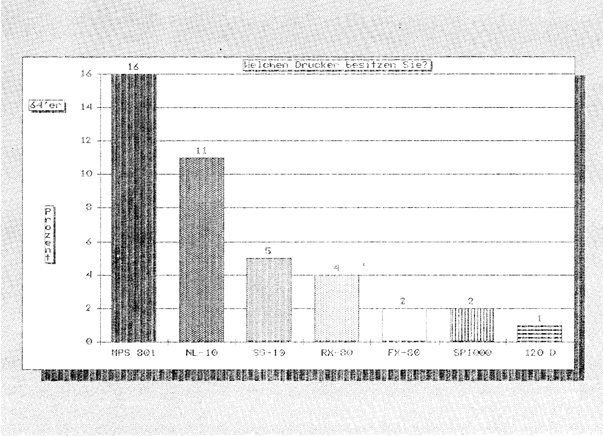
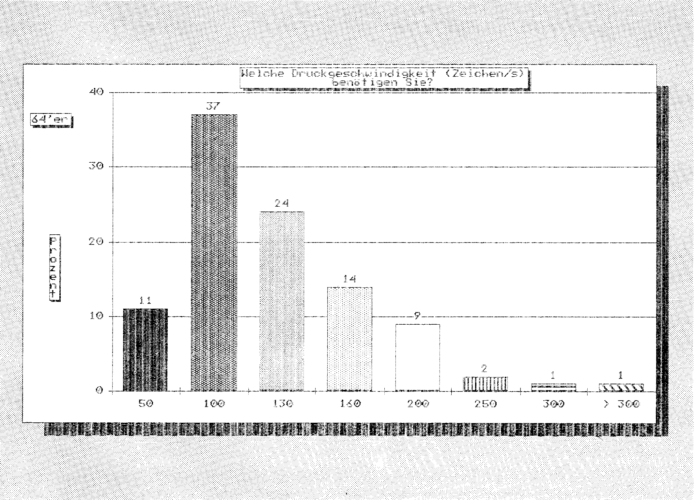
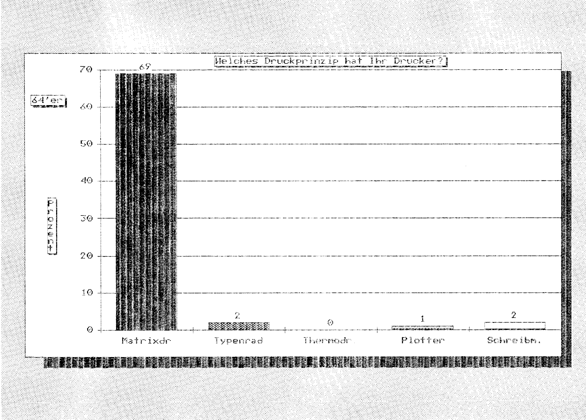
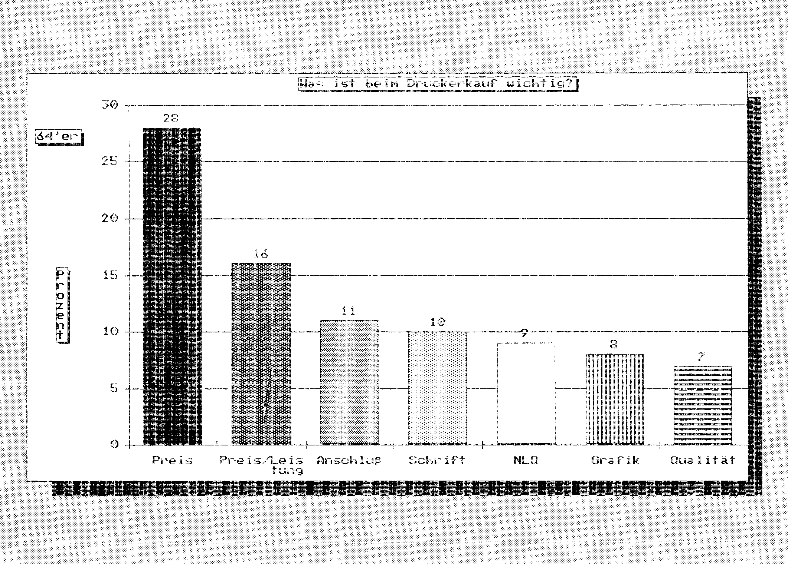
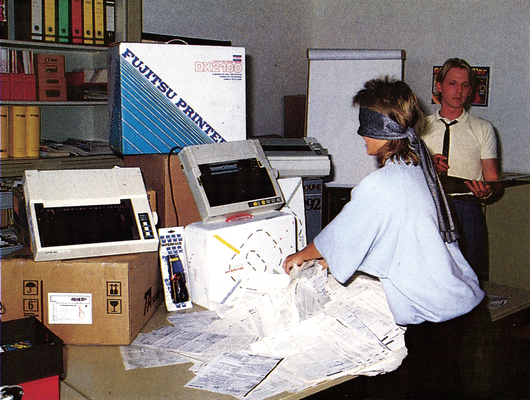

Druck-Daten
Nie wurde das Themengebiet »Drucker« so umfassend erfragt, wie in unserem großen Drucker-Wettbewerb. Nie kamen so viele, interessante Antworten und Anregungen — hier sind die Ergebnisse.
Eigentlich hatten wir bei einer so speziellen Fragestellung nicht mit diesem überwältigenden Teilnahmeergebnis gerechnet. Insgesamt haben über 10000 Leser den sehr umfangreichen Fragebogen ausgefüllt und uns damit ihre Meinung zu Druckern und unserer Berichterstattung über Drucker mitgeteilt. Ganz umsonst mußten Sie das wie immer bei uns nicht machen, denn es gab insgesamt 18 wertvolle Drucker zu gewinnen. Die Namen der Gewinner werden wir am Ende des Artikels bekanntgeben, bis dahin dürfen Sie also gespannt sein. Gleichzeitig lohnt es sich aber auch, die Ergebnisse der Umfrage genau zu analysieren, denn es gibt viele, sehr interessante Details. So stellte sich beispielsweise heraus, daß der Commodore MPS 801-(802-/803-) Drucker mit 16 Prozent immer noch der Spitzenreiter in der Gunst der Leser ist, die an der Umfrage teilgenommen haben. Seit unserer letzten Umfrage hat es allerdings einige wesentliche Verschiebungen gegeben, denn unser Referenzdrucker der Preisklasse II, der Star NL-10, hat sich in kürzester Zeit einen Anteil von 11 Prozent erkämpft (Bild 1). Hier bestätigt sich, daß wir mit unserer Berichterstattung richtig lagen, denn wir waren uns bereits Anfang des Jahres, als uns der NL-10 vorgestellt wurde, darüber im klaren, daß dieser Drucker für Commodore-Besitzer ziemlich ideal ist. Daß Sie mit unserer Berichterstattung über Drucker zufrieden sind, war eines der weiteren Ergebnisse der Umfrage. So meinen 22 Prozent, daß man an unseren Druckertests nichts mehr verändern sollte und 86 Prozent halten unsere Regelung mit den Referenzdruckern aus drei verschiedenen Preisklassen für eine gute Idee. Dagegen waren übrigens nur 3 Prozent. Die vielen Anregungen dazu, wie die Berichterstattung für Drucker in Zukunft aussehen sollte, können hier verkürzt gar nicht wiedergegeben werden. Viele Wünsche und Anregungen werden wir aber in unseren Grundlagenartikeln, in Schwerpunktthemen, Druckerkursen und natürlich auch in unseren Druckertests verwirklichen. Die Daten zeigen, daß Drucker und alles, was es an Software rund um Drucker gibt, ein Thema ist, für das sich die Mehrzahl unserer Leser interessiert.

Der ideale Drucker
Zu erfahren, was man alles an der Berichterstattung über Drucker noch besser machen könnte, war ein Ziel, ein anderes Ziel war es, Ihre Wünsche darüber zusammenzutragen, wie zukünftige Drucker aussehen sollen. So haben wir im Fragebogen viele Fragen im Zusammenhang mit technischen Eigenschaften von Druckern gestellt. Dieses, sich aus der Häufigkeit der Nennungen ergebende, Leistungsprofil zukünftiger Drucker ist Grundlage einer Zusammenfassung, die wir den namhaften Herstellern und Importeuren von Druckern in Deutschland vorgelegt haben. Die Reaktionen der Industrie zeigen, daß Ihre Meinung auch dort sehr ernst genommen wird. Vielleicht war es gerade Ihre Meinung, die direkten Einfluß auf zukünftige Druckergenerationen genommen hat.
Wie aber sieht so ein idealer Drucker aus? Zunächst einmal sollte er zwischen 100 und 200 Zeichen pro Sekunde schnell sein (Bild 2), leiser als 60 dBA sein, acht Farben und zwei bis drei Durchschläge herstellen können. Weitere Merkmale sind: Möglichst 8 KByte Pufferspeicher, viele Schriftarten einschließlich Schönschrift beherrschen, einen Schubtraktor und auf gar keinen Fall einen Zugtraktor haben. Sehr wichtig sind auch Schriftenmodule, gut erreichbare DIL-Schalter, Epson-Kompatibilität und vor allem gute Grafikfähigkeiten. Gut ankommen würden auch Schnittstellenmodule und ein halbautomatischer Papiereinzug. Zusammengefaßt betrachtet haben Sie ein Votum abgegeben, von dem man mit Sicherheit sagen kann, daß solch ein Drucker sehr gute Chancen auf dem Markt haben würde. Bleibt nur abzuwarten, wann dieser Drucker gebaut wird und wieviel er kosten wird. Aber da wir gerade beim Preis sind, auch hier haben Sie eindeutige Vorstellungen gezeigt. So sollte ein Matrixdrucker zwischen 700 und 1300 Mark kosten (54 Prozent der Antworten). Überhaupt sind Matrixdrucker der ganz große Renner, denn 69 Prozent unserer Leser besitzen einen. Wesentlich weniger gefragt sind Typenraddrucker (2 Prozent Besitz), Schreibmaschinen (2 Prozent Besitz) und Plotter (1 Prozent Besitz) (Bild 3). Recht interessant ist auch die Reihenfolge der Merkmale, die beim Druckerkauf entscheidend sind. An erster Stelle steht da das Argument preiswert (28 Prozent), dicht gefolgt vom Preis-/Leistungsverhältnis (16 Prozent) und dem problemlosen Anschluß (11 Prozent). Welche weiteren Punkte wichtig sind, sehen Sie in Bild 4.



Die Entscheidung ist gefallen
Doch nun wird es spannend. Die Gewinner der großen Druckerumfrage in unseren Zeitschriften Computer persönlich, Happy-Computer und 64'er sind ausgelost (Bild 5). Grund zur Freude haben nicht nur die Gewinner, sondern auch wir, denn Ihr Interesse zeigt uns, wie sehr Sie an der Gestaltung der 64'er interessiert sind. So gesehen, gewinnen alle Leser bei dieser Druckerumfrage.

Und hier sind die Namen der 18 Glücklichen, die einen Drucker erhalten:
C. Itoh Ritemann C+, Matrixdrucker
Reinhard Feser, 6507 Ingelheim 1
C. Itoh TPX-80, Thermodrucker
Bernhard Jäger, 7470 Albstadt 1
Melchers CPA 80X, Matrixdrucker
Bernd Wiedel, 8678 Schwarzenbach 1
Triumph Adler TRD 7020, Typenraddrucker
Hans-Helmut Moegling, NL - 1795 LR de Cocksdorp
Facit 4509, Matrixdrucker
Michael Steigerwald, 6251 Burgschwalbach
Mannesmann Tally MT 80+, Matrixdrucker
Hartmut Beirmann, 4800 Bielefeld
Citizen 120 D, Matrixdrucker
Frank Schuster, 4056 Schwalmtal
Centronics Super GLP, Matrixdrucker
Eric Beuerle, 6104 Seeheim
Uchida DWX 305, Typenraddrucker
Karl-Heinz Hartmann, 8408 Barbing
Okimate Microline ML 292, Matrixdrucker
Dirk Welling, 4400 Münster
Microscan GP 700 VG, Matrixdrucker
Ulf Freudenreich, 2410 Mölln
Fujitsu DX 2100, Matrixdrucker
Manfred Krämer, 6141 Einhausen
Juki 5510, Matrixdrucker
Reinhold Schneider, 8071 Hepberg
Epson FX-85, Matrixdrucker
Oliver Graumann, 4300 Essen
je 1 Olivetti DM 100, Matrixdrucker
an: Jürgen Weiß, 6836 Oftersheim
Alexander Olschewski, 3257 Springe 6
Panasonic KX-P 1080 G, Matrixdrucker
Thomas Woitke, 2800 Bremen 33
Silver Reed EXP 400P, Typenraddrucker
Ralf Derißen, 5102 Würselen
Alle, auch die Gewinner der Interfaces, Programme, Buchgutscheine und Abonnements, werden benachrichtigt und erhalten ihre Preise umgehend zugeschickt. Auch wenn Sie diesmal nicht gewonnen haben, in dieser Ausgabe haben Sie eine neue Chance.
Wir danken den Firmen Fujitsu (DX2100), Melchers (CPA 80X), Microscan (GP 700VC), Okidata (ML 292), C. Itoh (Riteman C+ und TPX-80), Olivetti (DM 100), MVB (Juki 5510), Synelec (Citizen 120D), Epson (FX-85), Triumph Adler (TA TRD 7020), Silver Reed (EXP 400P), Mannesmann Tally (MT 80+), Facit (4509), Centronics (GLP), Panasonic (KXP 1080), Weber Computertechnik (Uchida DWX 305) und Wiesemann (Interface 92000/G) für die freundliche Bereitstellung der Gewinne.
(aw)